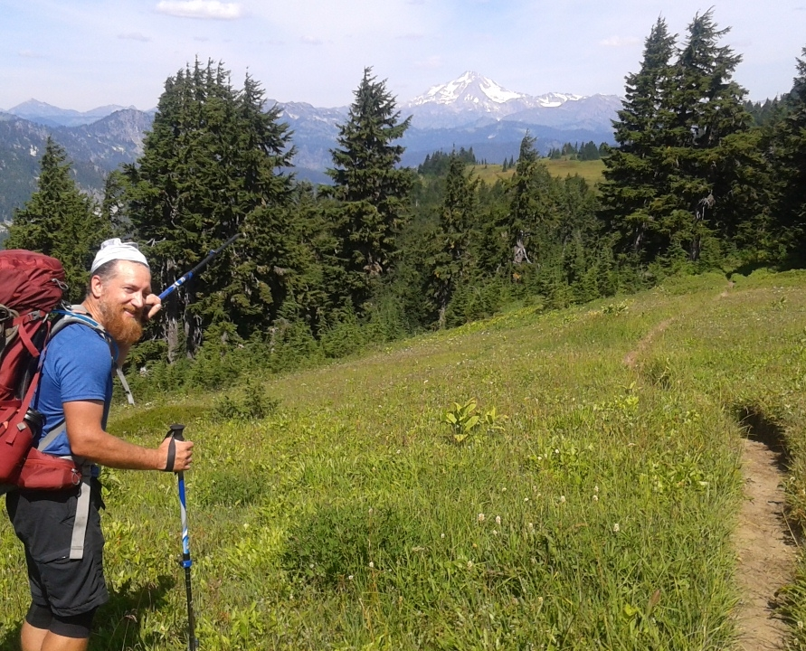

I'm Dave Barnes. I'm a husband, father and adventurer of the open trail. I've just begun the first steps of my journey into being a full stack web developer. After working PC break-fix for the last six years, I've decided I want to know more about "how the sausage is made" in regards to front end all the way to back end development. Our family moved to San Antonio, TX where I've been working for 3M for the past 2.5 years.
